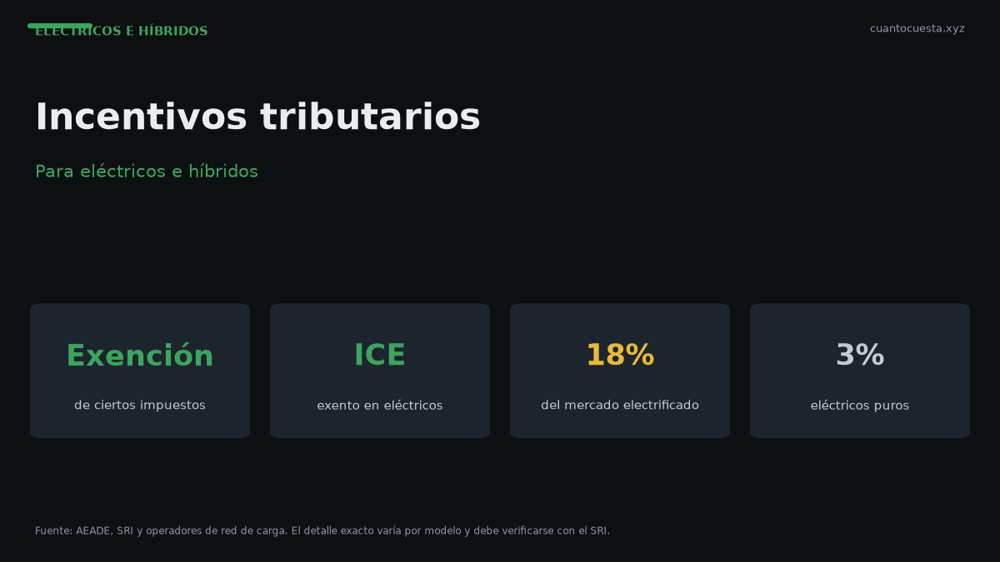

Incentivos tributarios para vehículos eléctricos e híbridos en Ecuador
Qué incentivos tienen los eléctricos y los híbridos en Ecuador, en qué se diferencian y cómo se tramitan. Qué verificar con el SRI antes de comprar.

Los vehículos 100% eléctricos en Ecuador cuentan con incentivos tributarios, entre ellos la exención de ciertos impuestos como el ICE y aranceles de importación según el caso. Los híbridos tienen un tratamiento fiscal distinto, no equivalente. El detalle exacto varía por tipo de vehículo y debe verificarse con el SRI.
Esa es la respuesta corta y también la honesta: sí existen beneficios, pero no podemos darte un porcentaje fijo ni una lista cerrada sin que la confirmes en la fuente oficial. Cualquier artículo que te prometa "X% de descuento garantizado" sin decirte que verifiques, te está vendiendo algo.
Advertencia previa: el régimen tributario de vehículos cambia con reformas y reglamentos. Todo lo de este artículo es orientación para saber qué preguntar y a quién, no una liquidación fiscal. Antes de firmar un contrato, pide el detalle por escrito al concesionario y confírmalo con el SRI.
Qué se dice de los incentivos — y qué no
Lo verificable es la existencia y la dirección del beneficio:
| Punto | Estado del dato |
|---|---|
| Los eléctricos 100% tienen incentivos tributarios en Ecuador | Verificado |
| Incluyen exención de ciertos impuestos, como el ICE | Verificado |
| Incluyen aranceles de importación exentos, según el caso | Verificado (varía según el caso) |
| Los híbridos tienen tratamiento fiscal distinto a los eléctricos puros | Verificado |
| Porcentaje o monto exacto del ahorro por modelo | No verificado — confirma en el SRI |
| Norma o artículo específico que lo respalda hoy | No verificado — confirma en el SRI |
Lo que no vamos a hacer es rellenar los huecos con números plausibles. La diferencia entre un incentivo real y uno supuesto puede ser varios miles de dólares en tu compra, y si te equivocas, la equivocación es tuya.
Eléctrico puro vs. híbrido: no es el mismo régimen
Esta es la confusión más costosa al comprar. "Electrificado" no significa "con incentivo pleno". Bajo el paraguas de vehículos electrificados conviven dos categorías fiscales distintas:
| Categoría | Qué es | Tratamiento fiscal |
|---|---|---|
| Eléctrico 100% (BEV) | Solo batería y motor eléctrico. No tiene motor de combustión. | Régimen con incentivos: exenciones de ciertos impuestos (ICE, aranceles según el caso) |
| Híbrido (HEV / PHEV) | Combina motor de combustión con apoyo eléctrico. | Tratamiento distinto al del eléctrico puro |
La regla práctica: el nivel de beneficio depende de cuánta combustión tiene el vehículo. Un híbrido no es "un eléctrico con un extra"; fiscalmente es otro producto.
Por eso la pregunta correcta en el concesionario no es "¿este carro tiene incentivos?", sino:
- ¿Este modelo está homologado como eléctrico 100%?
- ¿Qué impuestos exactos están exentos en esta versión y este año-modelo?
- ¿El precio que me muestran ya aplica el incentivo, o el descuento se tramita aparte?
Si el vendedor no puede mostrarte por escrito qué impuesto se deja de pagar y con qué base, el "incentivo" es un argumento de venta, no un dato.
Por qué el detalle varía tanto
Cuatro razones por las que el beneficio exacto no es un número único:
- Cambia con la norma vigente. Los regímenes de exención tienen vigencia y se modifican. Lo que aplicaba el año pasado puede no aplicar hoy.
- Depende del origen y del arancel base. La exención de aranceles aplica "según el caso": no todo vehículo eléctrico importado tiene el mismo arancel de partida.
- Depende de la versión. Una misma placa comercial puede tener versiones con distinta clasificación.
- Depende del tipo de trámite. El efecto no es igual para una importación directa que para una compra a concesionario, ni para una persona natural que para una empresa.
Ninguna de estas cuatro variables se resuelve con una tabla genérica de internet. Se resuelve preguntando.
Cómo se tramita: la ruta correcta
No publicamos un listado de formularios porque la lista de documentos exigidos cambia y no tenemos el detalle verificado. Lo que sí podemos darte es el orden de la ruta, con quién valida cada paso:
| Paso | Qué hacer | A quién preguntar |
|---|---|---|
| 1 | Confirmar que el modelo es eléctrico 100% homologado | Concesionario, por escrito |
| 2 | Pedir el detalle tributario del precio: qué impuesto se excluye y sobre qué base | Concesionario / área de importación |
| 3 | Solicitar la lista de documentos vigente para tu caso (persona natural u empresa) | SRI / concesionario |
| 4 | Confirmar la norma vigente y su alcance | SRI |
| 5 | Verificar si el incentivo viene aplicado en el precio o se tramita como exención posterior | Concesionario |
| 6 | Guardar todo por escrito: cotización con desglose, correo de confirmación, factura | Tú |
Ese último paso es el más importante y el que casi nadie hace. Un desglose escrito es tu única prueba si después llega un cobro inesperado.
Qué documentación suele pedirse (confirmar antes)
En trámites vehiculares y tributarios en Ecuador, la base documental suele incluir documento de identidad, factura o contrato de compraventa, y la ficha o certificado del vehículo. Para incentivos también se pide el respaldo de la clasificación del vehículo (el documento que acredita que es eléctrico 100%).
Marcamos esto explícitamente como no verificado: no tenemos confirmada la lista exacta ni los formatos vigentes. Pide la lista en el SRI o al concesionario antes de acercarte a una ventanilla y evita el viaje perdido.
El caso de los híbridos
Los híbridos son el grueso del mercado electrificado: de cada cinco vehículos nuevos vendidos en Ecuador en 2026, una fracción relevante es híbrida, y juntos los electrificados llegan al 18% de las ventas. Los eléctricos puros son solo el 3%.
Es decir, la mayoría de compradores de "electrificados" están comprando híbridos, y muchos asumen que tienen los mismos beneficios que un eléctrico puro. No los tienen. El tratamiento fiscal es distinto.
Si tu decisión de compra depende del incentivo, compara:
- el precio final con incentivo de un eléctrico 100%,
- contra el precio final sin ese incentivo de un híbrido equivalente.
Y haz la resta con números confirmados, no estimados.
Veredicto
Los incentivos existen y son reales: los eléctricos 100% en Ecuador gozan de incentivos tributarios, con exención de ciertos impuestos como el ICE y aranceles de importación según el caso. Los híbridos no tienen el mismo régimen.
Lo que no existe es un porcentaje universal. El beneficio cambia con la norma vigente, el modelo, la versión y el trámite. Verifícalo con el SRI antes de firmar.
Tres acciones concretas:
- Pide el desglose tributario por escrito al concesionario y que indique qué impuesto se excluye.
- Confirma en el SRI la norma vigente y la lista de documentos para tu caso.
- No compres por el incentivo: compra porque el auto calza con tu uso y tu presupuesto. El incentivo es un bono, no el motivo.
Si un vendedor no puede darte el detalle por escrito, toma ese silencio como la respuesta.
Sigue leyendo
Carros eléctricos en Ecuador 2026: catálogo, precios y autonomía real
En Ecuador hay 23 marcas y 42 modelos eléctricos, entre $28.000 y $150.000. Catálogo, autonomía
Costo por kilómetro: eléctrico vs gasolina en Ecuador (cálculo real)
Cargar un eléctrico cuesta $8 a $10 y la gasolina $3,26 el galón. Cuánto cuesta cada kilómetro
Híbrido vs eléctrico vs gasolina en Ecuador: cuál conviene según tu uso
Comparación por perfil de uso en Ecuador: ciudad, carretera, kilometraje y acceso a cargador. T
Red de carga en Ecuador: dónde, cuánto y cuánto tarda cargar
Ecuador tiene 94 puntos de recarga: 48 en Quito y 11 en Guayaquil. Tiempos reales de carga rápi
Cómo usamos estos datos
Las cifras de esta guía provienen de fuentes públicas oficiales y tarifarios de concesionarios publicados. Los valores son referenciales: tasas municipales, promociones y precios de repuestos varían. Verifica siempre en la entidad o concesionario antes de decidir.